Atendimento 24h
Equipe de pronto atendimento e regulação médica disponíveis a qualquer hora do dia ou da noite.
Atendimento online 24 horas para internação em dependência química e alcoolismo. Unidades de alto padrão com infraestrutura hospitalar de excelência e equipe multidisciplinar completa.
Linha de Apoio Ativa: Atendimento Imediato e Sigiloso
Uma unidade cercada de verde, com espaços amplos para o cuidado, a convivência e o descanso. Conheça por dentro o lugar onde o tratamento acontece.
Agende uma visita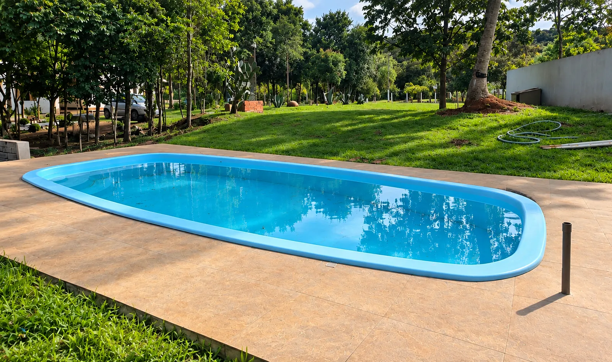
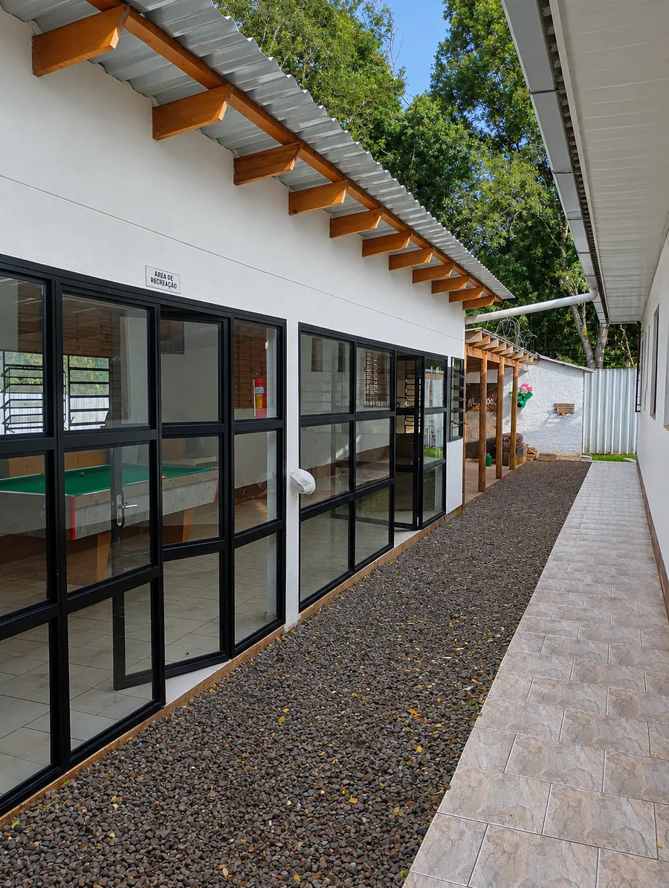
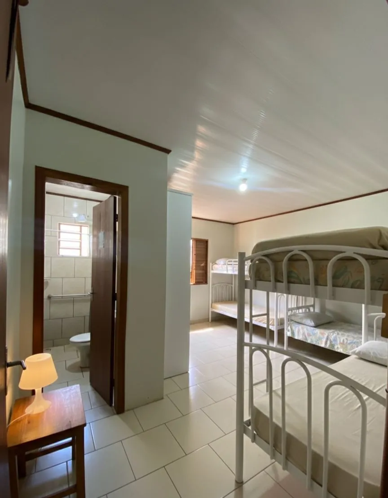
Jardins, palmeiras e caminhos para caminhar e respirar com calma.
Atividade física e lazer como parte da rotina terapêutica.
Sinuca e espaço de convivência entre as atividades.
Refeições balanceadas com cardápio acompanhado por nutricionista.
Ambientes limpos, arejados e com luz natural.
Monitoramento e equipe presente dia e noite.
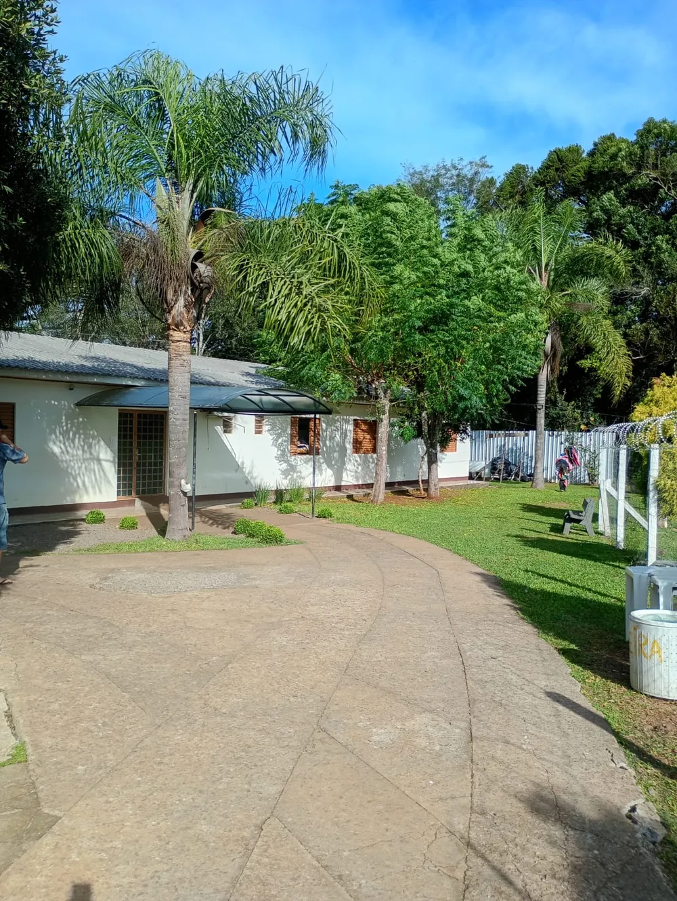
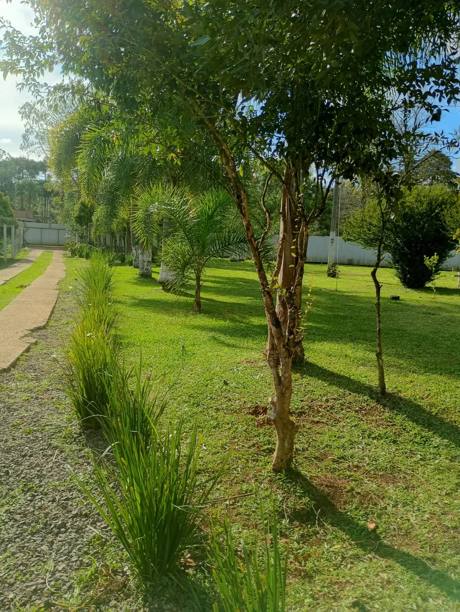
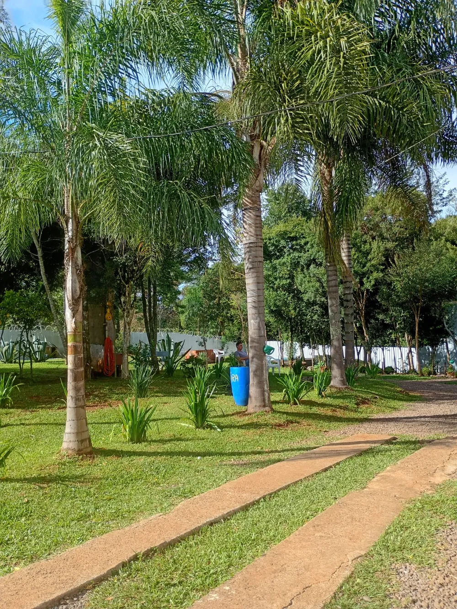
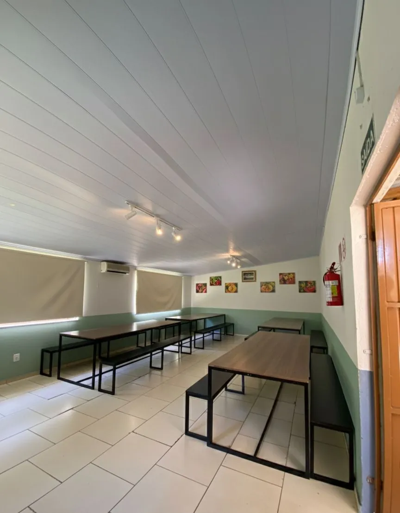
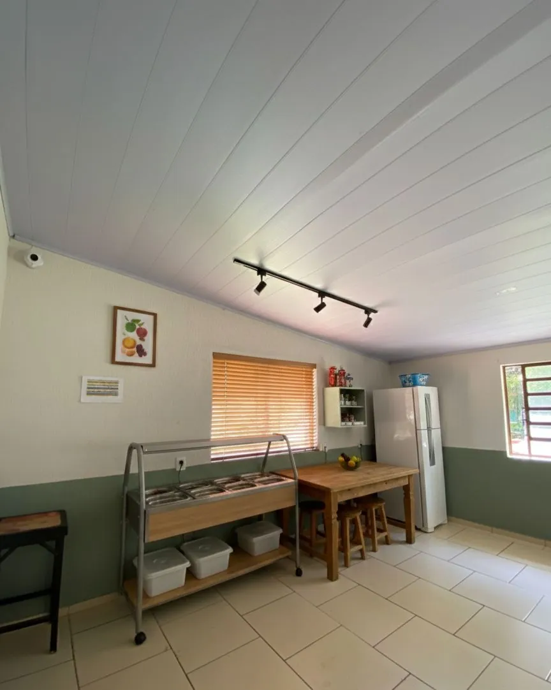
Oferecemos suporte integral, seguro e de alto nível para garantir o sucesso no processo de reabilitação.
Equipe de pronto atendimento e regulação médica disponíveis a qualquer hora do dia ou da noite.
Corpo clínico composto por psiquiatras, psicólogos, terapeutas, enfermeiros e nutricionistas dedicados.
Instalações acolhedoras que reúnem o conforto de uma residência e a segurança de um ambiente hospitalar.
Garantia absoluta de privacidade e confidencialidade em todas as etapas do acolhimento e tratamento.
A rede Recomeço à Vitória nasceu com o propósito de redefinir o tratamento para dependência química no Brasil. Oferecemos um ambiente terapêutico altamente qualificado, focado no resgate da dignidade e integridade física e emocional de cada paciente.
Aliando ciência, medicina de ponta e profundo acolhimento humanizado, desenvolvemos metodologias personalizadas que envolvem não apenas o paciente, mas toda a sua estrutura familiar no processo de cura.
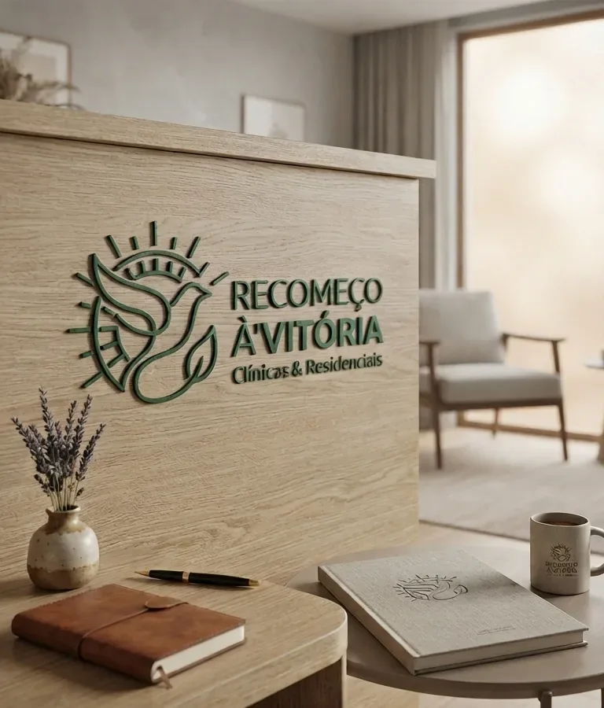
Protocolos embasados cientificamente e adequados ao estágio de cada indivíduo.
Acolhimento humanizado para pacientes que reconhecem a necessidade de ajuda e buscam ativamente a reabilitação.
Realizada conforme previsão legal (Lei 13.840), voltada para a preservação da vida do paciente que perdeu a capacidade de decisão.
Acompanhamento médico contínuo e farmacológico na primeira fase, amenizando os sintomas da abstinência de forma segura.
Abordagem multidisciplinar focada nas especificidades físicas e comportamentais da dependência do álcool.
Terapia cognitivo-comportamental aplicada de forma intensiva para o tratamento contra diversas substâncias psicoativas.
Prevenção à recaída e reinserção social assistida, garantindo que o paciente mantenha a sobriedade no retorno ao lar.
Profissionais qualificados atuando em sinergia para proporcionar o melhor plano de recuperação.
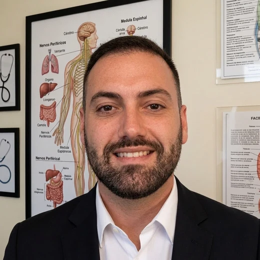
Psiquiatra
CRM 27373 · RQE 44651
Avaliação diagnóstica, condução do tratamento medicamentoso e acompanhamento clínico durante toda a internação.
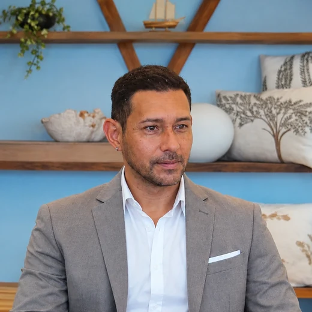
Psicólogo & Psicanalista
CRP 07301649
Atendimento individual e em grupo, com escuta voltada às causas da dependência e à prevenção de recaída.
Enfermeira
COREN 189698 ENF
Pós-graduada em Urgência e Emergência Pré e Intra-hospitalar, Estomaterapia e Docência.
Nutricionista
Sócio Proprietário
Planos alimentares individualizados para recuperação nutricional e restabelecimento físico ao longo do tratamento.
Assistente Social
CRESS 11641
Recuperação social e fortalecimento psicológico durante a internação.
Técnica de Enfermagem
COREN 1036503 TE
Monitoramento contínuo dos parâmetros de saúde e administração segura de medicações.
A verdadeira vitória se reflete nas histórias de transformação e nas famílias reestruturadas.
"A internação involuntária do meu filho foi a decisão mais difícil da minha vida, mas a equipe do Recomeço à Vitória nos acolheu com uma humanidade e competência técnica incríveis. Hoje ele está recuperado e trabalhando conosco novamente. Eternamente grata."
"Buscamos a clínica em um momento de total desespero. O acompanhamento psiquiátrico de alto padrão e o ambiente calmo foram fundamentais na reabilitação do meu marido. O respeito ao paciente é absoluto."
Nossa equipe de acolhimento e regulação médica está disponível agora mesmo para sanar dúvidas sobre custos, cobertura de convênios, formas de internação voluntária e involuntária e logística de remoção.
Fale com a Coordenação 24h (54) 99674-1966Converse em minutos com um coordenador clínico, com total discrição.
Iniciar Conversa